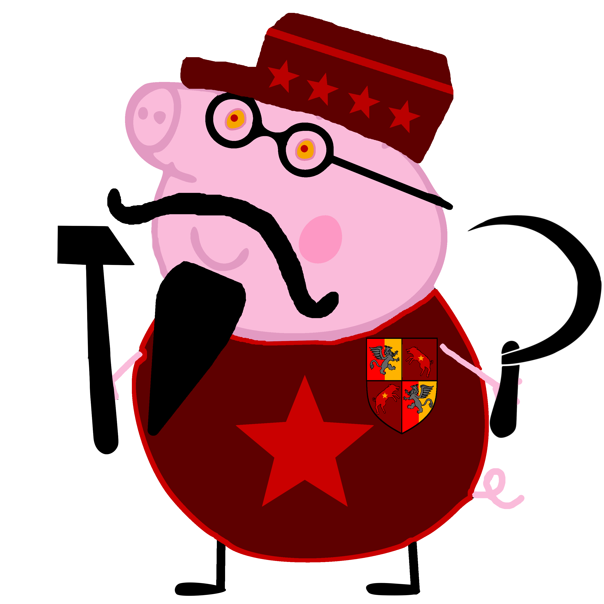

Bohaterowie i Antagoniści
Poniżej znajduje się lista znanych osobistości, których czyny zapisały się na kartach historii Felorostu.
Korona Krulestwa Multikont

Krul Artur I Gryfion
Monarcha Korony Krulestwa Multikont, Krul Multikont
Monarcha Korony Krulestwa Multikont, Krul Multikont

Puchacz Potężny
Lider Strigallorów
Lider Strigallorów
Margarita
Diuszessa Księstwa Margarity
Diuszessa Księstwa Margarity
Tatowie Świnkowie

Bolszewicki Tata Świnka
Najstarszy z Tatów Świnków
Najstarszy z Tatów Świnków
Demokratyczny Tata Świnka
Wielki Diuk Korony Krulestwa Multikont
Wielki Diuk Korony Krulestwa Multikont